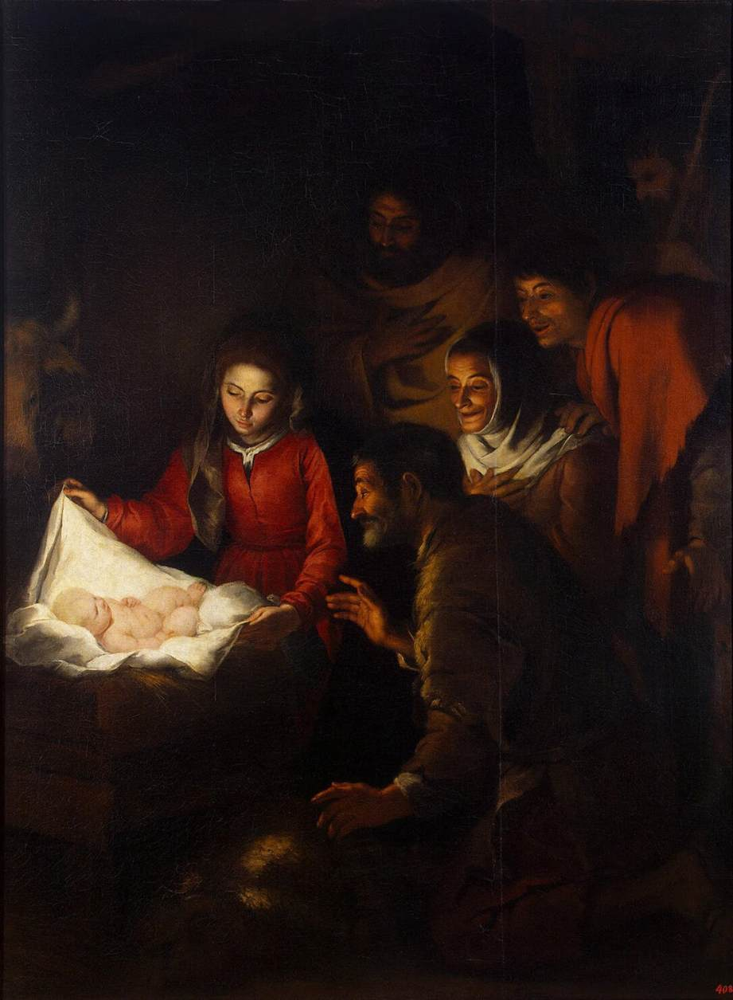
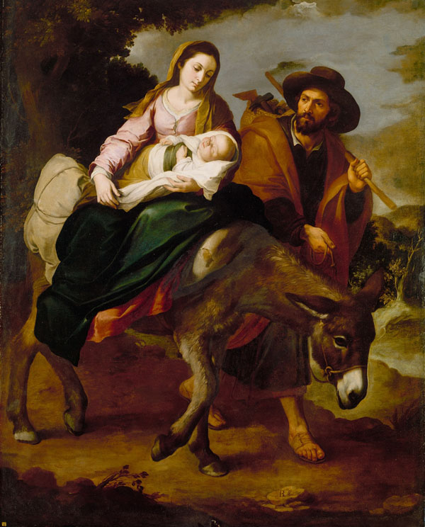

60. HAVING said something so far of the necessity which we have of the devotion to the most holy Virgin, I must now show in what this devotion consists. This I will do, by God’s help, after I shall have first presupposed some fundamental truths, which shall throw light on that grand and solid devotion which I desire to disclose.
61. JESUS CHRIST our Saviour, true God and true Man, ought to be the last end of all our other devotions, else they are false and delusive. Jesus Christ is the alpha and omega, the beginning and the end of all things. We labour not, as the Apostle says, except to render every man perfect in Jesus Christ; because it is in Him alone that the whole plenitude of the Divinity dwells, together with all the other plenitudes of graces, virtues, and perfections; because it is in Him alone that we have been blessed with all spiritual benediction; and because He is our only Master, who has to teach us; our only Lord, on whom we ought to depend; our only Head, to whom we must belong; our only Model, to whom we should conform ourselves; our only Physician, who can heal us; our only Shepherd, who can feed us; our only Way, who can lead us; our only Truth, who can make us grow; our only Life, who can animate us; and our only All in all things, who can suffice us. There has been no other name given under heaven, except the name of Jesus, by which we can be saved. God has laid no other foundation of our salvation, of our perfection, and of our glory, except Jesus Christ. Every building which is not built upon that firm rock is founded upon the moving sand, and sooner or later will fall infallibly. Every one of the faithful who is not united to Him, as a branch to the stock of the vine, shall fall, shall wither, and shall be fit only to be cast into the fire. If we are in Jesus Christ and Jesus Christ in us, we have no condemnation to fear. Neither the Angels of heaven, nor the men of earth, nor the devils of hell, nor any other creatures, can injure us; because they cannot separate us from the love of God which is in Jesus Christ. By Jesus Christ, with Jesus Christ, in Jesus Christ, we can do all things; we can render all honour and glory to the Father in the unity of the Holy Ghost; we can become perfect ourselves, and be to our neighbour a good odour of eternal life.
62. If, then, we establish the solid devotion to our Blessed Lady, it is only to establish more perfectly the devotion to Jesus Christ, and to put forward an easy and secure means for finding Jesus Christ If devotion to our Lady removed us from Jesus Christ, we should have to reject it as an illusion of the devil; but on the contrary, so far from this being the case, there is nothing which makes devotion to our Lady more necessary for us, as I have already shown, and will show still further hereafter, than that it is the means of finding Jesus Christ perfectly, of loving Him tenderly, and of serving Him faithfully.
63. I here turn for one moment to Thee, O my sweet Jesus, to complain lovingly to Thy Divine Majesty that the greater part of Christians, even the most learned, do not know the necessary union which there is between Thee and Thy holy Mother. Thou, Lord, art always with Mary, and Mary is always with Thee, and she cannot be without Thee, else she would cease to be what she is. She is so transformed into Thee by grace that she lives no more, that she is as though she were not. It is Thou only, my Jesus, who livest and reignest in her more perfectly than in all the Angels and the Blessed. Ah! if we knew the glory and the love which Thou receivest in this admirable creature, we should have very different thoughts both of Thee and her from what we have now. She is so intimately united with Thee, that it were easier to separate the light from the sun, the heat from the fire. I say more: it were easier to separate from Thee all the Angels and the Saints than the divine Mary, because she loves Thee more ardently, and glorifies Thee more perfectly, than all other creatures put together.
64. After that, my sweet Master, is it not an astonishingly pitiable thing to see the ignorance and the darkness of all men here below in regard to Thy holy Mother? I speak not so much of idolaters and pagans, who, knowing Thee not, care not to know Thee; I speak not even of heretics and schismatics, who care not to be devout to Thy holy Mother, being separated as they are from Thee and Thy holy Church: but I speak of Catholic Christians, and even of doctors amongst Catholics, who make profession of teaching truths to others, and yet know not Thee nor Thy holy Mother, except in a speculative, dry, barren, and indifferent manner. These doctors speak but rarely of thy holy Mother, and of the devotion which we ought to have to her, because they fear, so they say, lest we should abuse it, and should do some injury to Thee in too much honouring Thy holy Mother. If they see or hear anyone devout to our Blessed Lady, speaking often of his devotion to that good Mother in a tender, strong, and persuasive way, as of a secure means without delusion, as of a short road without danger, as of an immaculate way without imperfection, and as of a wonderful secret for finding and loving Thee perfectly, they cry out against him, and give him a thousand false reasons by way of proving to him that he ought not to talk so much of our Blessed Lady, that there are great abuses in that devotion, and that we must direct our energies to destroy these abuses, and to speak of Thee, rather than to incline the people to devotion to our Blessed Lady, whom they already love sufficiently.
We hear them sometimes speak of devotion to Thy holy Mother, not for the purpose of establishing it and persuading men to it, but to destroy the abuses which are made of it, while all the time these teachers are without piety or tender devotion towards Thyself, simply because they have none for Mary. They regard the Rosary, the Scapular, and the Chaplet as devotions proper for weak and ignorant minds, and without which men can save themselves; and if there falls into their hands any poor client of our Lady, who says his Rosary, or has any other practice of devotion towards her, they soon change his spirit and his heart. Instead of the Rosary, they counsel him the seven Penitential Psalms. Instead of devotion to the holy Virgin, they counsel him devotion to Jesus Christ.
O my sweet Jesus, have these people got Thy spirit? Do they please Thee in acting thus? Is it to please Thee, to spare one single effort to please Thy Mother for fear of thereby displeasing Thee? Does devotion to Thy holy Mother hinder devotion to Thyself? Is it that she attributes to herself the honour which we pay her? Is it that she makes a side for herself apart? Is it that she is an alien, who has no union with Thee? Does it displease Thee that we should try to please her? Is it to separate or to alienate ourselves from Thy love to give ourselves to her and to love her?
65. Yet, my sweet Master, the greater part of the learned could not shrink more from devotion to Thy holy Mother, and could not show more indifference to it, if all that I have just said were true! Keep me, Lord—keep me from their sentiments and their practices, and give me some share in the sentiments of gratitude, esteem, respect, and love which Thou hadst in regard to Thy holy Mother, in order that I may love Thee and glorify Thee all the more by imitating and following Thee more closely.
66. So, as if up to this point I had still said nothing in honour of Thy holy Mother, give me now the grace to praise her worthily, Fac me digne tuam Matrem collaudare, in spite of all her enemies, who are Thine as well; and grant me to say loudly with the Saints, Non prcesumat aliquis Deum se habere propitium, qui benedictam Matrem offensam habuerit—“Let not that man presume to look for the mercy of God who offends His holy Mother.”
67. To obtain of Thy mercy a true devotion to Thy holy Mother, and to inspire it to the whole earth, make me to love Thee ardently; and for that end receive the burning prayer which I make to Thee with St. Augustine and thy true friends:
“Tu es Christus, pater meus sanctus, Deus meus pius, rex meus magnus, pastor meus bonus, magister meus unus, adjutor meus optimus, dilectus meus pulcherrimus, panis meus vivus, sacerdos meus in aeternum, dux meus ad patriam, lux mea vera, dulcedo mea sancta, via mea recta, sapientia mea praeclara, simplicitas mea pura, concordia mea pacifica, custodia mea tota, portio mea bona, salus mea sempitema.”
“Christe Jesu, amabilis Domine, cur amavi, quare concupivi in omni vita mea quidquam praeter te Jesum Deum meum? Ubi eram quando tecum mente non eram? Jam ex hoc nunc, omnia desideria mea, incalescite et effluite in Dominum Jesum; currite, satis hactenus tardastis; properate, quo pergitis; quaerite quam quaeritis. Jesu, qui non amat te, anathema sit; qui te non amat, amaritudinibus repleatur.”
“O dulcis Jesu, te amet, in te delectetur, te admiretur omnis sensus bonus tuae conveniens laudi; Deus cordis mei et pars mea, Christe Jesu, deficiat cor meum spiritu suo, et vivas tu in me, et concalescat spiritu meo vivus carbo amoris tui, et excrescat in ignem perfectum, ardeat jugiter in ara cordis mei, ferveat in medullis meis, flagret in absconditis animae meae; in die consummationis meae consummatus inveniar apud te. Amen.”
I have desired to put in Latin this admirable prayer of St. Augustine, in order that those who understand Latin may say it every day, to ask for the love of Jesus, which we seek by the divine Mary.
[The translator thinks it well to give the prayer in English, and without throwing it into the small print of a note:]
Thou art Christ, my holy Father, my tender God, my great King, my good Shepherd, my one Master, my best Helper, my most Beautiful and my Beloved, my living Bread, my Priest for ever, my Leader to my country, my true Light, my holy Sweetness, my straight Way, my excellent Wisdom, my pure Simplicity, my pacific Harmony, my whole Guard, my good Portion, my everlasting Salvation.
Christ Jesus, sweet Lord, why have I ever loved, why in my whole life have I ever desired, anything except Thee, Jesus my God? Where was I, when I was not in Thy mind with Thee? Now, from this time forth, do ye, all my desires, grow hot, and flow out upon the Lord Jesus; run—ye have been tardy so far; hasten whither ye are going; seek whom ye are seeking. O Jesus, may he who loves Thee not be anathema; may he who loves Thee not be filled with bitterness!
O sweet Jesus, may every good feeling that is fitted for Thy praise love Thee, delight in Thee, admire Thee, God of my heart, and my Portion! Christ Jesus, may my heart faint away in spirit, and mayest Thou be my life within me! May the live coal of Thy love grow hot within my spirit, and break forth into a perfect fire; may it burn incessantly on the altar of my heart; may it glow in my innermost being; may it blaze in hidden recesses of my soul; and in the day of my consummation may I be found consummated with Thee! Amen.
68. WE MUST conclude, from what Jesus Christ is with regard to us, that we do not belong to ourselves, but, as the Apostle says, are entirely His, as His members and His slaves, whom He has bought at an infinitely dear price—the price of all His Blood. Before Baptism we belonged to the devil, as his slaves; but Baptism has made us true slaves of Jesus Christ, who have no right to live, to work, or to die, except to bring forth fruit for that God-Man, to glorify Him in our bodies, and to let Him reign in our souls, because we are His conquest, His acquired people, and His inheritance. It is for the same reason that the Holy Ghost compares us;
§ 1. To trees planted along the waters of grace in the field of the Church, who ought to bring forth their fruit in their seasons;
§ 2. To the branches of a vine, of which Jesus Christ is the stock, and which must yield good grapes;
§ 3. To a flock of which Jesus Christ is the shepherd, and which is to multiply and give milk;
§ 4. To a good land, of which God is the labourer, in which the seed multiplies itself, and brings forth thirty-fold, sixty-fold, and a hundred-fold.
Jesus Christ cursed the unfruitful fig-tree, and gave sentence against the useless servant, who had not made any profit on his talent. All this proves to us that Jesus Christ wishes to receive some fruits from our wretched selves, namely, our good works, because those good works belong to Him alone: Creati in operibus bonis in Christo Jesu—“Created in good works in Christ Jesus,”—which words show both that Jesus Christ is the sole principle, and ought to be the sole end of all our good works, and also that we ought to serve Him, not as servants on wages, but as slaves of love. I will explain myself.
69. Here on earth there are two ways of belonging to another, and of depending on his authority, namely, simple service and slavery—what we mean by a servant, and what we mean by a slave.
By common service amongst Christians a man engages himself to serve another, daring a certain time, at a certain rate of wages or of recompense.
By slavery a man is entirely dependent on another for his whole life, and must serve his master without pretending to any wages or reward, just as one of his beasts, over which he has the right of life and death.
70. There are three sorts of slavery: a slavery of nature, a slavery of constraint, and a slavery of the will. All creatures are slaves of God in the first sense: Domini est terra et plenitudo ejus—“The earth is the Lord’s, and the fulness of it.” The demons and the damned are slaves in the second sense; the just and the Saints in the third. The slavery of the will is the most glorious to God, who looks at the heart, claims the heart, and calls Himself the God of the heart; that is, of the loving will, because by that slavery we make choice of God and His service above all things, even when nature does not oblige us to it.
71. There is an entire difference between a servant and a slave:
§ 1. A servant does not give all he is, all he has, and all he can acquire by himself or by another, to his master; but the slave gives himself whole and entire to his master, all he has and all he can gain, without any exception.
§ 2. The servant exacts wages for the services which he performs for his master; but the slave can exact nothing, whatever assiduity, whatever industry, whatever energy, he may have at his work.
§ 3. The servant can leave his master when he pleases, or at least when the time of his service shall be expired; but the slave has no right to quit his master at his will.
§ 4. The master of the servant has no right of life and death over him, so that if he kill him like one of his beasts of burden, he would commit an unjust homicide; but the master of the slave has by the law a right of life and death over him, so that he may sell him to anybody he likes, or kill him, as if he stood on the same level as one of his horses.
§ 5. Lastly, the servant is only for a time in his master’s service; the slave is for always.
72. There is nothing among men which makes us belong to another more than slavery. There is nothing among Christians which makes us more absolutely belong to Jesus Christ and His holy Mother than the slavery of the will, according to the example of Jesus Christ Himself, who took on Him the form of a slave for love of us—Formam servi accipiens—and also according to the example of the holy Virgin, who is called the servant and the slave of the Lord. The Apostle calls himself, as by a title of honour, Servus Christi—“The slave of Christ.” Christians are often called in the Holy Scriptures Servi Christi, “Slaves of Christ,”—which word servus, as a great man has truly remarked, signified in old times nothing but a slave, because there were no servants then like those of the present day. Masters were served only either by slaves or by freedmen. It is this which the catechism of the Holy Council of Trent, in order to leave no doubt about our being slaves of Jesus Christ, expresses by an unequivocal term, in calling us Mancipia Christi—“Slaves of Jesus Christ.”
73. Having premised this, I say that we ought to be to Jesus Christ and to serve Him not only as mercenary servants, but as loving slaves, who, by an effect of great love, give themselves up to serve Him in the quality of slaves, for the simple honour of belonging to Him. Before Baptism we were the slaves of the devil; Baptism has made us the slaves of Jesus Christ: Christians must needs be either the slaves of the devil or the slaves of Jesus Christ.
74. What I say absolutely of Jesus Christ, I say relatively of our Blessed Lady. Jesus Christ, having chosen her for the inseparable companion of His life, of His death, of His glory, and of His power in heaven and upon earth, has given her by grace, relatively to His Majesty, all the same rights and privileges which He possesses by nature. Quidquid Deo convenit per naturam, Marice convenit per gratiam—“All that is fitting to God by nature is fitting to Mary by grace,”—say the Saints; so that, according to them, Mary and Jesus having but the same will and the same power, the two have the same subjects, servants, and slaves.
75. We may, therefore, following the sentiments of the Saints and of many great men, call ourselves, and make ourselves, the loving slaves of the most holy Virgin, in order to be by that very means the more perfectly the slaves of Jesus Christ. Our Blessed Lady is the means our Lord made use of to come to us. She is also the means which we must make use of to go to Him. For she is not like all the rest of creatures, who, if we should attach ourselves to them, might rather draw us away from God than draw us near Him. The strongest inclination of Mary is to unite us to Jesus Christ her Son; and the strongest inclination of the Son is, that we should come to Him by His holy Mother. It is to honour and please Him, just as it would be to do honour and pleasure to a king, to become more perfectly his subject and his slave, by making ourselves the slaves of the queen. It is on this account that the holy Fathers, and St. Bonaventure after them, said that our Lady was the way to go to our Lord: Via veniendi ad Christum est appropinquare ad illam.
76. Moreover, if, as I have said, the holy Virgin is the Queen and Sovereign of heaven and of earth, then is it not true what has been said by St. Anselm, St. Bernard, St. Bernardine, and St. Bonaventure—has she not as many subjects and slaves as there are creatures? Imperio Dei omnia subjiciuntur, et Virgo; ecce imperio Virginis omnia subjiciuntur, et Deus. Is it not reasonable that amongst so many slaves of constraint, there should be some of love, who of their own good will, in the quality of slaves, should choose Mary for their mistress? What! are men and devils to have their voluntary slaves, and Mary to have none? What! shall a king hold it to be for his honour that the queen, his companion, should have slaves over whom she has the right of life and death, because the honour and power of the one is the honour and power of the other, and yet are we to think that our Lord, who, as the best of all Sons, has divided His entire power with His holy Mother, shall take it ill that she too has her slaves? Has He less respect and love for His Mother than Ahasuerus had for Esther, or than Solomon for Bathsebee? Who shall dare to say so, or even to think it?
77. But whither is my pen hurrying me? Why am I stopping here to prove a thing so plain? If we do not wish to call ourselves slaves of the Blessed Virgin, what matter? Let us make ourselves and call ourselves slaves of Jesus Christ; for that is to be the slave of the holy Virgin, inasmuch as Jesus is the fruit and the glory of Mary; and it is this very thing which we do, by the devotion of which we are hereafter to speak.
78. OUR BEST actions are ordinarily stained and corrupted by the ground of evil which is so deeply laid up in us. When we put clean and clear water into a vessel which has a foul and evil smell, or wine into a cask the inside of which has been spoilt by another wine which has been in it, the clear water and the good wine are spoilt, and readily take the bad odour. In like manner, when God puts into the vessel of our soul, spoilt by original and actual sin, His graces and heavenly dews, or the delicious wine of His love, His gifts are ordinarily spoilt and corrupted by the bad leaven and the evil which sin has left within us. Our actions, even the most sublime and virtuous, feel the effects of it. It is therefore of great importance in the acquiring of perfection, which it must be remembered is only acquired by union with Jesus Christ, to empty ourselves of everything which is bad within us; otherwise our Lord, who is infinitely pure and hates infinitely the least stain upon our souls, will cast us out from His presence, and will not unite Himself to us.
79. To empty ourselves of ourselves, we must:
§ 1. First, thoroughly recognise, by the light of the Holy Ghost, our inward corruption, our incapacity for every good thing useful for salvation, our weakness in all things, our inconstancy at all times, our indignity of every grace, and our iniquity in every position. The sin of our first father has spoilt us all, soured us, puffed us up and corrupted us, as the leaven sours, puffs, and corrupts the paste into which it is put. The actual sins which we have committed, whether mortal or venial, pardoned though they may be, have nevertheless increased our concupiscence, our weakness, our inconstancy, and our corruption, and have left evil consequences in our souls.
Our bodies are so corrupted that they are called by the Holy Ghost bodies of sin, conceived in sin, nourished in sin, and capable of all sin—bodies subject to thousands of maladies, which go on corrupting from day to day, and which engender nothing but disease, vermin, and corruption.
Our soul, united to our body, has become so carnal, that it is called flesh. “All flesh having corrupted its way,” we have nothing for our portion but pride and blindness in the spirit, hardness in the heart, weakness and inconstancy in the soul, concupiscence, revolted passions, and sicknesses in the body. We are naturally prouder than peacocks, more grovelling on the earth than toads, more vile than unclean animals, more envious than serpents, more gluttonous than hogs, more furious than tigers, lazier than tortoises, weaker than reeds, and more capricious than weathercocks. We have down in our own selves nothing but nothingness and sin, and we deserve nothing but the anger of God, and the everlasting hell.
80. After this, ought we to be astonished if our Lord has said, that whosoever wishes to follow Him must renounce himself and hate his own soul, and that whosoever shall love his own soul shall lose it, and whosoever shall hate it shall save it? He who is infinite Wisdom does not give commandments without reason, and He has only commanded us to hate ourselves, because we so richly deserve to be hated. Nothing is worthier of love than God, and nothing is worthier of hatred than ourselves.
81. § 2. Secondly, in order to empty ourselves of ourselves, we must die to ourselves daily. That is to say, we must renounce the operations of the powers of our soul, and of the senses of our body. We must see as if we saw not, understand as if we understood not, and make use of the things of this world as if we made no use of them at all. This is what St. Paul calls dying daily—Quotidie morior. If the grain of corn falling on the earth does not die, it remains earth, and brings forth no good fruit. Nisi granum frumenti, cadens in terram, mortuum fuerit, ipsum solum manet. If we die not to ourselves, and if our holiest devotions do not incline us to this necessary and useful death, we shall bring forth no fruit worth anything, and our devotions will become useless. All our justices will be stained by self-love and our own will; and this will cause God to hold in abomination the greatest sacrifices we can make, and the best actions we can do; so that at our death we shall find our hands empty of virtues and of merits, and we shall not have one spark of pure love, which is only communicated to souls dead to themselves, souls whose life is hidden with Jesus Christ in God.
82. § 3. We must choose, therefore, among all the devotions to the Blessed Virgin, the one which draws us most towards this death to ourselves, inasmuch as it will be the best and the most sanctifying. For we must not think that all that shines is gold, that all that tastes sweet is honey, or all that is easy to do and is done by the greatest number is sanctifying. As there are secrets of nature to do in a short time, at little cost and with facility, natural operations, so also in like manner there are secrets in the order of grace to do in a short time, with sweetness and facility, supernatural operations, such as emptying ourselves of self, filling ourselves with God, and becoming perfect.
The practice which I am about to disclose is one of these secrets of grace, unknown by the greater number of Christians, known even to few of the devout, and practised and relished by a far less number still. But in order to begin to disclose this practice, let us consider a fourth truth, which is a consequence of the third.
83. IT IS more perfect, because it is more humble, not to approach God of ourselves, without taking a mediator. The very foundation of our nature, as I have just shown, is so corrupted, that if we lean on our own works, industries, and preparations, in order to reach God and to please Him, it is certain that our justices will be defiled, or be of little weight before God, to engage Him to unite Himself to us, and to hear us. It is not without reason that God has given us mediators with His Majesty. He has seen our unworthiness and incapacity. He has had pity upon us; and, in order to give us access to His mercies, He has provided us with powerful intercessors with His grandeur, insomuch that to neglect these mediators, and to draw near to His holiness directly, and without any recommendation, is to fail in humility. It is to fail in respect towards God, so high and so holy. It is to make less account of that King of kings than we should make of a king or prince of earth, whom we should not willingly approach without some friend to speak for us.
84. Our Lord is our Advocate and Mediator of redemption with God the Father. It is by Him that we ought to pray, in union with the whole Church triumphant and militant. It is by Him that we have access to the Majesty of the Father, before whom we ought never to appear except leaning on the merits, and indeed clothed with the merits, of His Son; just as the young Jacob came before his father Isaac in the skins of the kids to receive his benediction.
85. But have we not need of a mediator with the Mediator Himself? Is our purity great enough to unite us directly to Him, and by ourselves? Is He not God, in all things equal to His Father, and by consequence the Holy of Holies, as worthy of respect as His Father? If, by His infinite charity, He has made Himself our bail and our Mediator with God His Father, in order to appease Him and to pay Him what we owed Him, are we on that account to have less respect and less fear for His Majesty and His Sanctity?
Let us say boldly with St. Bernard, that we have need of a mediator with the Mediator Himself, and that it is the divine Mary who is the most capable of filling that charitable office. It is by her that Jesus Christ came, and it is by her that we must go to Him. If we fear to go directly to Jesus Christ our God, whether because of His infinite greatness, or because of our vileness, or because of our sins, let us boldly implore the aid and intercession of Mary our Mother. She is good, she is tender, she has nothing in her austere or repulsive, nothing too sublime and too brilliant. In seeing her, we see our pure nature. She is not the sun, who, by the vivacity of his rays, blinds us because of our weakness; but she is fair and gentle as the moon, which receives the light of the sun, and tempers it to render it more suitable to our capacity. She is so charitable that she repels none of those who ask her intercession, no matter how great sinners they have been; for, as the Saints say, never has it been heard since the world was the world, that anyone has confidently and perseveringly had recourse to our Blessed Lady, and yet has been repelled. She is so powerful that never have any of her petitions been refused. She has but to show herself before her Son to pray to Him, and straightway He grants her desires, straightway He receives her prayers. He is always lovingly vanquished by the breasts, the yearnings, and the prayers of His dearest Mother.
86. All this is drawn from St. Bernard and from St. Bonaventure, so that, according to them, we have three steps to mount to go to God: the first, which is the nearest to us, and the most suited to our capacity, is Mary; the second is Jesus Christ; and the third is God the Father. To go to Jesus, we must go to Mary; she is our mediatrix of intercession. To go to God the Father, we must go to Jesus; for He is our Mediator of redemption. Now it is by the devotion which I am about to bring forward, that this order is guarded perfectly.
87. IT IS very difficult, considering our weakness and frailty, to preserve in ourselves the graces and treasures which we have received from God:
§ 1. Because we have this treasure, which is worth more than heaven and earth put together, in frail vessels—Habemus thesaurum isturn in vasis fictilibus—in a corruptible body, and in a weak and inconstant soul, which a mere nothing disturbs and dejects.
88. § 2. Because the devils, who are skilful thieves, wish to surprise us unawares, and to strip us. They watch day and night for the favourable moment. For that end they go round about us incessantly to devour us, and to snatch from us in one moment, by a sin, all that we have gained of graces and of merits for many years. Their malice, their experience, their stratagems, and their number, ought to make us fear immensely this misfortune, especially when we see how many persons, fuller of grace than we are, richer in virtues, better founded in experience, and far higher exalted in sanctity, have been surprised, robbed, and unhappily pillaged. Ah! how many of the cedars of Lebanon, how many of the stars of the firmament, have we not seen to fall miserably, and in the twinkling of an eye to lose all their height and all their brightness! Whence comes that sad and curious change? It has not been for want of grace, which is wanting to no man; but it has been want of humility. They thought themselves stronger and more sufficient than they were. They thought themselves capable of guarding their own treasures. They trusted in themselves, leaned upon themselves. They thought their house secure enough, and their coffers strong enough, to keep the precious treasure of their grace. It is because of that scarcely sensible leaning upon themselves, while all the while it seemed to them that they were leaning only on the grace of God, that the most just Lord has permitted them to be robbed by leaving them to themselves. Alas! if they had but known the admirable devotion which I will unfold presently, they would have confided their treasure to a Virgin, powerful and faithful, who would have kept it for them as if it had been her own possession; nay, who would have even taken it as an obligation of justice on herself to preserve it for them.
89. § 3. It is difficult to persevere in justice because of the strange corruption of the world. The world is now so corrupt, that it seems to be inevitable that religious hearts should be soiled, if not by its mud, at least by its dust. So that it has become a kind of miracle for anyone to remain firm in the midst of this impetuous torrent without being drawn in by it, in the midst of that stormy sea without being drowned in it or stripped by the pirates and the corsairs, in the midst of that pestilent air without being infected by it. It is the Virgin, alone faithful, in whom the serpent has never had part, who works this miracle for those who serve her in that sweet way which I have shortly to unfold.
90. Having assumed these Five Truths, we must now take more pains than ever to make a good choice of the true devotion to our Blessed Lady. There are at this time, more than ever, false devotions to our Blessed Lady, which it is easy to mistake for true ones. The devil, like a false coiner and a subtle and experienced sharper, has already deceived and destroyed so many souls by a false devotion to the Blessed Virgin, that he makes a daily use of his diabolical experience to plunge many others by this same way into everlasting perdition; amusing them, lulling them to sleep in sin, under the pretext of some prayers badly said, or of some outward practices which he inspires. As a false coiner does not ordinarily counterfeit anything but gold and silver, or very rarely the other metals, because they are not worth the trouble, so the evil spirit does not for the most part counterfeit the other devotions, but only those to Jesus and Mary, the devotion to Holy Communion, and to our Blessed Lady, because they are, among other devotions, what gold and silver are amongst metals.
91. It is, then, very important first of all to know;
§ 1. False devotions to our Blessed Lady in order to avoid them; and;
§ 2. The true devotion in order to embrace it.
In conclusion, among so many practices of true devotion to our Blessed Lady, I will explain more in detail, in the second part of this treatise, which is the most perfect one, the one most agreeable to our Lady, the most glorious to God, and the most sanctifying to ourselves, in order that we may attach ourselves to it.

92. I FIND seven kinds of false devotees and false devotions to our Lady, namely;
§ 1. The critical devotees;
§ 2. The scrupulous devotees;
§ 3. The external devotees;
§ 4. The presumptuous devotees;
§ 5. The inconstant devotees;
§ 6. The hypocritical devotees; and;
§ 7. The interested devotees.
93. The critical devotees are, for the most part, proud scholars, rash and self-sufficient spirits, who have at bottom some devotion to the holy Virgin, but who criticise nearly all the practices of devotion to her, which the simple people pay simply and holily to their good Mother, because these practices do not fall in with their own humour and fancy. They call in doubt all the miracles and histories recorded by authors worthy of our faith, or drawn from the chronicles of religious orders; narratives which testify to us the mercies and the power of the most holy Virgin. They cannot see without uneasiness simple and humble people on their knees before an altar or an image of our Lady, sometimes in the corner of a street, in order to pray to God there; and they even accuse them of idolatry, as if they adored the wood or the stone. They say that, for their part, they are not fond of these external devotions, and that their minds are not so weak as to give faith to such a number of tales and little histories as are in circulation about our Lady. Or, at other times, they reply that the narrators have spoken as professional orators, with exaggeration; or they put a bad interpretation upon their words.
These kind of false devotees and of proud and worldly people are greatly to be feared. They do an infinite wrong to the devotion to our Lady; and they are but too successful in alienating people from it, under the pretext of destroying its abuses.
94. The scrupulous devotees are those who fear to dishonour the Son by honouring the Mother, to abase the one in elevating the other. They cannot bear that we should attribute to our Lady the most just praises which the holy Fathers have given her. It is all they can do to endure that there should be more people before the altar of the Blessed Virgin than before the Blessed Sacrament, as if the one was contrary to the other, as if those who prayed to our Blessed Lady did not pray to Jesus Christ by her. They are unwilling that we should speak so often of our Lady, and address ourselves so frequently to her.
These are the favourite sentences constantly in their mouths: “To what end are so many chaplets, so many confraternities, and so many external devotions to the Blessed Virgin? There is much of ignorance in all this. It makes a mummery of our religion. Speak to us of those who are devout to Jesus Christ” (yet they often name Him without uncovering: I say this by way of parenthesis). “We must have recourse to Jesus Christ; He is our only Mediator. We must preach Jesus Christ; this is the solid devotion.” What they say is true in a certain sense, but it is very dangerous, when, by the application they make of it, they hinder devotion to our Blessed Lady, and it is, under the pretext of a greater good, a subtle snare of the evil one. For never do we honour Jesus Christ more than when we are most honouring His Blessed Mother. Indeed we only honour Mary that we may the more perfectly honour Jesus, inasmuch as we only go to her as to the way in which we are to find the end we are seeking, which is Jesus.
95. The Church, with the Holy Ghost, blesses our Lady first, and our Lord second—Benedicta tu in mulierbus, et benedictus fructus ventris tui Jesus. It is not that Mary is more than Jesus, or even equal to Him. That would be an intolerable heresy; but it is that, in order to bless Jesus more perfectly, we must begin by blessing Mary. Let us, then, say with all the true clients of our Lady against these false scrupulous devotees, O Mary, thou art blessed amongst all women, and blessed is the fruit of thy womb, Jesus.
96. External devotees are persons who make all devotion to our Blessed Lady consist in outward practices. They have no taste except for the exterior of this devotion, because they have no interior spirit of their own. They will say quantities of Rosaries with the greatest precipitation; they will hear many Masses distractedly; they will go without devotion to processions; they will enrol themselves in all sorts of confraternities, without amending their lives, without doing any violence to their passions, or without imitating the virtues of that most holy Virgin. They have no love but for the sensible part of devotion, without having any relish for its solidity. If they have not sensible sweetness in their practices, they think they are doing nothing; they get all out of joint, throw everything up, or do everything at random. The world is full of these exterior devotees; and there are no people who are more critical of men of prayer, of those who foster an interior spirit as the essential thing, while they do not lightly account of that outward modesty which always accompanies true devotion.
97. Presumptuous devotees are sinners abandoned to their passions, or lovers of the world, who, under the fair name of Christians and clients of our Blessed Lady, conceal pride, avarice, impurity, drunkenness, anger, swearing, detraction, injustice, or some other sin. They sleep in peace in the midst of their bad habits, without doing any violence to themselves to correct their faults, under the pretext that they are devout to the Blessed Virgin. They promise themselves that God will pardon them; that they will not be allowed to die without confession; and that they will not be lost eternally, because they say the Rosary, because they fast on Saturdays, because they belong to the Confraternity of the Holy Rosary, or wear the scapular, or are enrolled in other congregations, or wear the little habit or little chain of our Lady [See note further on].
They will not believe us when we tell them that their devotion is only an illusion of the devil, and a pernicious presumption likely to destroy their souls. They say that God is good and merciful; that He has not made us to condemn us everlastingly; that no man is without sin; that they shall not die without confession; that one good Peccavi at the hour of death is enough; that they are devout to our Lady; that they wear the scapular; and that they say daily, without reproach or vanity, seven Paters and Aves in her honour; and that they sometimes say the Rosary and the Office of our Lady, besides fasting, and other things. To give authority to all this, and to blind themselves still further, they quote certain stories, which they have heard or read—it does not matter to them whether they be true or false—relating how people have died in mortal sin without confession; and then, because in their lifetime they sometimes said some prayers, or went through some practices of devotion to our Lady, how they have been raised to life again, in order to go to confession, or their soul been miraculously retained in their bodies till confession; or how they have obtained from God at the moment of death contrition and pardon of their sins, and so have been saved; and that they themselves expect similar favours.
98. Nothing in Christianity is more detestable than this diabolical presumption. For how can we say truly that we love and honour our Blessed Lady, when by our sins we are pitilessly piercing, wounding, crucifying, and outraging Jesus Christ her Son? If Mary laid down a law to herself, to save by her mercy this sort of people, she would be authorising crime, and assisting to crucify and outrage her Son, Who would dare to think such a thought as that?
99. I say, that thus to abuse devotion to our Lady, which, after devotion to our Lord in the Blessed Sacrament, is the holiest and solidest of all devotions, is to be guilty of a horrible sacrilege, which, after the sacrilege of an unworthy Communion, is the greatest and the least pardonable of all sacrileges.
I confess that, in order to be truly devout to our Blessed Lady, it is not absolutely necessary to be so holy as to avoid every sin, though this were to be wished; but so much at least is necessary, and I beg you to lay it well to heart:
§ 1. To have a sincere resolution to avoid, at least, all mortal sin, which outrages the Mother as well as the Son.
§ 2. I would add also that to do violence to ourselves to avoid sin, to enrol ourselves in confraternities, to say the Rosary or other prayers, to fast on Saturdays, and the like.
100. These good works are wonderfully useful to the conversion of a sinner, however hardened; and if my reader is such a one, even if he has his foot in the abyss, I would counsel these things to him. Nevertheless it must be on the condition that he will only practise these good works with the intention of obtaining from God, by the intercession of the Blessed Virgin, the grace of contrition and the pardon of his sins, to conquer his evil habits, and not to remain quietly in the state of sin, in spite of the remorse of his conscience, the example of Jesus Christ and the Saints, and the maxims of the holy Gospel.
101. The inconstant devotees are those who are devout to our Blessed Lady by intervals and whims. Sometimes they are fervent and sometimes lukewarm. Sometimes they seem ready to do anything for her, and then, a little afterwards, they are not like the same people. They begin by taking up all the devotions to her, and enrolling themselves in the confraternities; and then they do not practise the rules with fidelity. They change like the moon; and Mary puts them under her feet with the crescent, because they are mutable, and unworthy to be reckoned among the servants of that faithful Virgin, whose clients have for their special graces fidelity and constancy. It were better for such persons to load themselves with fewer prayers and practices, and to fulfil them with faithfulness and love, in spite of the world, the devil, and the flesh.
102. We have still to mention the false devotees to our Blessed Lady, who are the hypocritical devotees; who cloak their sins and sinful habits under her mantle, in order to pass in the eyes of men for what they are not.
103. There are also the interested devotees, who have recourse to our Lady only to gain some lawsuit, or to avoid some danger, or to be cured of some illness, or for some other similar necessity, without which they would forget her altogether. Both, however, of these two last classes are false devotees, and neither of them pass current before God and His holy Mother.
104. Let us, then, take great care not to be of the number of the critical devotees, who believe nothing and criticise everything; nor of the scrupulous devotees, who are afraid of being too devout to our Lady, out of respect to our Lord; nor of the exterior devotees, who make all their devotion consist in outward practices; nor of the presumptuous devotees, who, under the pretext of their false devotion to the Blessed Virgin, wallow in their sins; nor of the inconstant devotees, who by levity change their practices of devotion, or throw them up altogether on the least temptation; nor of the hypocritical devotees, who put themselves into confraternities, and wear the liveries of the Blessed Virgin, in order to pass for good people; nor, finally, of the interested devotees, who only have recourse to our Lady to be delivered from bodily evils, or to obtain temporal goods.
105. AFTER having laid bare and condemned the false devotions to the most holy Virgin, we must, in a few words, characterise the true devotion. It must be;
§ 1. interior,
§ 2. tender,
§ 3. holy,
§ 4. constant, and;
§ 5. disinterested.
106. § 1. True devotion to our Lady is interior; that is to say, it comes from the spirit and the heart. It flows from the esteem we have of her, the high idea we have formed of her greatness, and the love which we have for her.
107. § 2. It is tender; that is to say, full of confidence in her, like a child’s confidence in his loving mother. This confidence makes the soul have recourse to her in all its bodily or mental necessities, with much simplicity, trust, and tenderness. It implores the aid of its good Mother, at all times, in all places, and about all things; in its doubts, that it may be enlightened; in its wanderings, that it may be brought into the right path; in its temptations, that it may be supported; in its weaknesses, that it may be strengthened; in its falls, that it may be lifted up; in its discouragements, that it may be cheered; in its scruples, that they may be taken away; in its crosses, toils, and disappointments of life, that it may be consoled under them. In a word, in all its evils of body and mind, the soul’s ordinary refuge is in Mary, without fearing to be importunate to her or to displease Jesus Christ.
108. § 3. True devotion to our Lady is holy; that is to say, it leads the soul to avoid sin, and to imitate in the Blessed Virgin particularly her profound humility, her lively faith, her continual prayer, her universal mortification, her divine purity, her ardent charity, her heroic patience, her angelical sweetness, and her divine wisdom. These are the ten principal virtues of the most holy Virgin.
109. § 4. True devotion to our Lady is constant. It confirms the soul in good, and it does not let it easily abandon its spiritual exercises. It makes it courageous in opposing the world in its fashions and maxims, the flesh in its wearinesses and passions, and the devil in his temptations. So that a person truly devout to our Blessed Lady is neither changeable, irritable, scrupulous, nor timid. It is not that such a person does not fall, or change sometimes in the sensible feeling of devotion, or in the amount of devotion itself. But when he falls, he rises again by stretching out his hand to his good Mother. If he loses the taste and relish of devotion, he does not disturb himself because of that; for the just and faithful client of Mary lives on the faith of Jesus and Mary, and not on sentiments and sensibilities.
110. § 5. Lastly, true devotion to our Blessed Lady is disinterested; that is to say, it inspires the soul not to seek itself but God only, and God in His holy Mother. A true client of Mary does not serve that august Queen from a spirit of lucre and interest, nor for its own good, whether temporal, corporal, or spiritual; but exclusively because she merits to be served, and God alone in her. He does not love Mary precisely because she does him good, or because he hopes in her; but because she is so worthy of love. It is on this account that he loves and serves her as faithfully in his disgusts and drynesses, as in his sweetnesses and sensible fervours. He loves her as much on Calvary, as at the marriage of Cana. Oh! how such a client of our Blessed Lady, who has no self-seeking in his service of her, is agreeable and precious in the eyes of God and of His holy Mother! But in these days how rare is such a sight! It is that it may be less rare that I have taken my pen to put on paper what I have taught, in public and in private, during my missions for many years.
111. I have now said many things about the most holy Virgin; but I have many more to say, and there are infinitely more which I shall omit, whether from ignorance, inability, or want of time, in the design which I have to form a true client of Mary, and a true disciple of Jesus Christ.
112. Oh! but my labour will have been well expended if this little Writing, falling into the hands of a soul of good dispositions, a soul well born—born of God and of Mary, and not of blood, nor of the will of the flesh, nor of the will of man—should unfold to him, and should, by the grace of the Holy Ghost, inspire him with, the excellence and the price of that true and solid devotion to our Blessed Lady, which I am going presently to describe. If I knew that my guilty blood could serve in engraving upon anyone’s heart the truths which I am writing in honour of my true Mother and sovereign Mistress, I would use my blood instead of ink to form the letters, in the hope to find some good souls who, by their fidelity to the practice which I teach, shall compensate to my dear Mother and Mistress for the losses which she has suffered through my ingratitude and infidelities.
113. I feel myself more than ever animated to believe and to hope all which I have had deeply engraven upon my heart, and have asked of God these many years, namely, that sooner or later the Blessed Virgin shall have more children, servants, and slaves of love than ever; and that, by this means, Jesus Christ, my dear Master, shall reign more in hearts than ever.
114. I clearly foresee that raging beasts shall come in fury to tear with their diabolical teeth this little Writing and him whom the Holy Ghost has made use of to write it, or at least to smother it in the silence of a coffer, that it may not appear. They shall even attack and persecute those who shall read it and carry it out in practice. But what matter? On the contrary, so much the better! This very foresight encourages me, and makes me hope for a great success; that is to say, for a great squadron of brave and valiant soldiers of Jesus and Mary, of both sexes, to combat the world, the devil, and corrupted nature in those more than ever perilous times which are about to come! Qui legit, intelligat. Qui potest capere, capiat.
